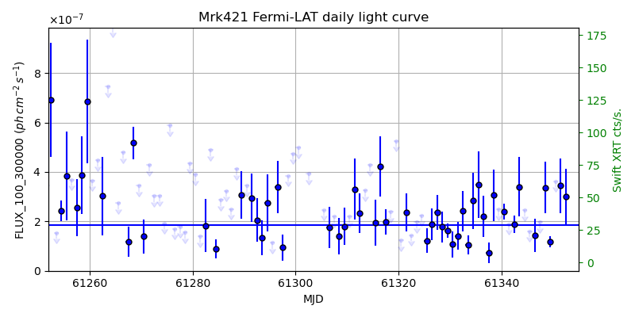
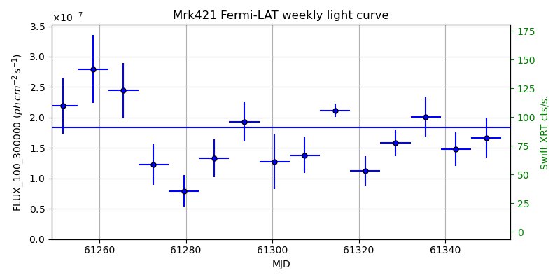
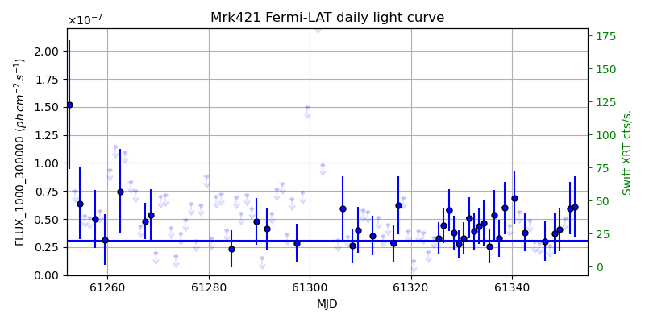
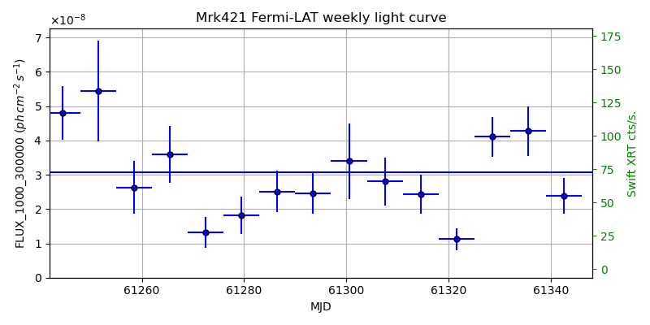

LAT Lightcurve site: https://fermi.gsfc.nasa.gov/ssc/data/access/lat/msl_lc/source/Mrk_421
Swift site: https://www.swift.psu.edu/monitoring/source.php?source=Mrk421
NED: Query
Time of last update of this page: UT: 2026-11-13 16:23 (MJD: 61357.683)
| Property | Value |
|---|---|
| R.A. | 11:04:27.36 |
| Dec. | 38:12:32.4 |
| z | 0.030 |
| 3FGL SpectrumType | PowerLaw |
| 3FGL PL Index | 1.77 |
| 3FGL Flux_100_300000 | 1.84e-07 1 / (s cm2) |
| 3FGL Flux_1000_300000 | 3.08e-08 1 / (s cm2) |
| 3FGL Flux >200 GeV | 5.07e-10 1 / (s cm2) |
| 3FGL Extrap. Crab >200 GeV | 2.15 |
| 3FGL Flux After EBL Absorption >200GeV | 4.19e-10 1 / (s cm2) |
| 3FGL EBL Crab Fraction >200GeV | 1.78 |

| MJD | dMJD | Flux | dFlux | Frac3FGL | FracCrab>200GeV | EBLFracCrab>200GeV |
|---|---|---|---|---|---|---|
| 61348.50 | 0.50 | 3.37e-07 | 1.05e-07 | 1.83 | 4.00 | 3.31 |
| 61349.50 | 0.50 | 1.18e-07 | 2.35e-08 | 0.64 | 1.40 | 1.16 |
| 61350.50 | 0.50 | 3.63e-07 | 0.00e+00 | 0.00 | 0.00 | 0.00 |
| 61351.50 | 0.50 | 3.44e-07 | 1.11e-07 | 1.87 | 4.09 | 3.38 |
| 61352.50 | 0.50 | 3.00e-07 | 1.13e-07 | 1.63 | 3.57 | 2.95 |

| MJD | dMJD | Flux | dFlux | Frac3FGL | FracCrab>200GeV | EBLFracCrab>200GeV |
|---|---|---|---|---|---|---|
| 61321.50 | 3.50 | 1.12e-07 | 2.40e-08 | 0.61 | 1.33 | 1.10 |
| 61328.50 | 3.50 | 1.59e-07 | 2.17e-08 | 0.86 | 1.88 | 1.55 |
| 61335.50 | 3.50 | 2.01e-07 | 3.24e-08 | 1.09 | 2.38 | 1.97 |
| 61342.50 | 3.50 | 1.48e-07 | 2.74e-08 | 0.81 | 1.76 | 1.46 |
| 61349.50 | 3.50 | 1.67e-07 | 3.26e-08 | 0.91 | 1.98 | 1.64 |

| MJD | dMJD | Flux | dFlux | Frac3FGL | FracCrab>200GeV | EBLFracCrab>200GeV |
|---|---|---|---|---|---|---|
| 61348.50 | 0.50 | 3.74e-08 | 1.83e-08 | 1.22 | 2.66 | 2.20 |
| 61349.50 | 0.50 | 4.10e-08 | 1.94e-08 | 1.33 | 2.91 | 2.41 |
| 61350.50 | 0.50 | 5.07e-08 | 0.00e+00 | 0.00 | 0.00 | 0.00 |
| 61351.50 | 0.50 | 5.96e-08 | 2.32e-08 | 1.94 | 4.23 | 3.50 |
| 61352.50 | 0.50 | 6.08e-08 | 2.72e-08 | 1.97 | 4.31 | 3.56 |

| MJD | dMJD | Flux | dFlux | Frac3FGL | FracCrab>200GeV | EBLFracCrab>200GeV |
|---|---|---|---|---|---|---|
| 61321.50 | 3.50 | 1.12e-08 | 3.27e-09 | 0.36 | 0.80 | 0.66 |
| 61328.50 | 3.50 | 4.11e-08 | 5.76e-09 | 1.34 | 2.91 | 2.41 |
| 61335.50 | 3.50 | 4.27e-08 | 7.22e-09 | 1.39 | 3.03 | 2.50 |
| 61342.50 | 3.50 | 2.38e-08 | 5.22e-09 | 0.77 | 1.69 | 1.40 |
| 61349.50 | 3.50 | 2.89e-08 | 6.69e-09 | 0.94 | 2.05 | 1.69 |
--------------------------------------------------------- Using user-supplied coords: 11:04:27.36 38:12:32.4 2000 --------------------------------------------------------- FLWO UT night of: 2026-11-14 Local Sid. @ Midnight: 03:09 Sunset (-15.0) (local, UT): 18:35 01:35 Sunrise (-15.0) (local, UT): 05:42 12:42 Moonrise (local, UT): Moonset (local, UT): 20:50 03:50 Moon phase: 0.22 --------------------------------------------------------- AzTime LSID UT Obj_el Obj_az Mn_el Mn_az Sep. --------------------------------------------------------- 18:35 21:44 01:35 -17.7 343.2 20.1 218.2 128.1 19:05 22:14 02:05 -19.2 349.2 16.0 223.7 128.2 19:35 22:44 02:35 -20.1 355.4 11.6 228.6 128.3 20:05 23:14 03:05 -20.2 1.7 6.9 233.2 128.4 20:35 23:44 03:35 -19.7 8.0 2.0 237.3 128.6 21:05 00:14 04:05 -18.5 14.1 -2.2 241.2 128.7 21:35 00:44 04:35 -16.6 20.0 -9.0 244.8 128.9 22:05 01:14 05:05 -14.1 25.6 -14.6 248.2 129.0 22:35 01:44 05:35 -11.1 30.8 -20.4 251.4 129.2 23:05 02:14 06:05 -7.5 35.6 -26.2 254.5 129.4 23:35 02:44 06:35 -2.2 40.1 -32.1 257.5 129.6 00:05 03:14 07:05 1.1 44.2 -38.1 260.6 129.8 00:35 03:45 07:35 5.4 47.9 -44.2 263.8 130.0 01:05 04:15 08:05 10.2 51.3 -50.2 267.1 130.2 01:35 04:45 08:35 15.3 54.4 -56.3 270.9 130.5 02:05 05:15 09:05 20.6 57.2 -62.4 275.3 130.7 02:35 05:45 09:35 26.0 59.7 -68.4 281.1 131.0 03:05 06:15 10:05 31.6 61.9 -74.2 289.9 131.2 03:35 06:45 10:35 37.3 63.9 -79.6 306.2 131.5 04:05 07:15 11:05 43.1 65.5 -83.2 343.5 131.8 04:35 07:45 11:35 48.9 66.8 -82.1 35.1 132.0 05:05 08:15 12:05 54.8 67.5 -77.4 61.2 132.3 05:35 08:45 12:35 60.8 67.6 -71.8 73.4 132.6 05:42 08:52 12:42 62.0 67.5 -70.5 75.2 132.6 --------------------------------------------------------- Dark hours >55 deg.: 0.59 srcstart (UT): 2026-11-14 12:05 srcend (UT): 2026-11-14 12:41